114 年國中教育會考社會試題與答案
這一頁是民國 114 年國中教育會考社會的整份歷屆試題，共 54 題，題目與標準答案出自心測中心 會考歷屆試題（依著作權法 §9，考試試題不受著作權保護），其中 54 題附有詳解。以下逐題列出題幹、選項與答案；要計時作答或記錄成績，請用線上練習。
線上作答這一科 →
全部 54 題
第 1 題
一國若發生重大自然災害，可能會直接衝擊該國的經濟活動，而成為較脆弱的投資環境。臺灣因位於地震帶常發生地震，且易受颱風侵襲，於2015年被某金融機構列為最脆弱的十個國家之一。下列哪一國家最可能也因為常發生上述二種自然災害而列名其中？
- （A）日本
- （B）伊朗
- （C）北韓
- （D）澳洲
答案：（A）
詳解與考點
正解：題幹要求同時具備常發生地震與颱風兩種災害；日本位於環太平洋地震帶，也常受颱風侵襲，故 A 為正解。
B：伊朗多地震，但少受颱風侵襲。
C：北韓地震頻率較低，且少有颱風侵襲，不符合兩項條件。
D：澳洲雖可能受熱帶氣旋影響，但地震相對少。
本題考點：自然災害分布——須同時比對地震帶與颱風路徑；環太平洋地震帶——日本與臺灣皆位於此帶，且同受西北太平洋颱風影響。
第 2 題
2019年底，臺灣的農場與牧場，正式迎來首批合法的農業移工，其中2名是酪農移工，其餘 5名則是外展農業移工。外展農業移工意指由農會、漁會、農林漁牧有關之合作社，或非營利組織等「外展機構」所聘僱的外國人，並由外展機構指派其至服務的場所從事農務工作。上述政策的推行主要是為了因應下列何項問題？
- （A）農業勞動力老化
- （B）農產品的安全性
- （C）農村失業率偏高
- （D）稻米的生產過剩
答案：（A）
詳解與考點
正解：題幹引進農業移工，是為補足農村人口老化、青壯年外移所造成的農業勞動力不足，故 A 為正解。
B：農產品安全性應靠生產與檢驗管理，非引進移工的主要目的。
C：若農村失業率偏高，通常不需要以引進移工補足人力。
D：稻米生產過剩屬產銷問題，與農業勞動力不足無直接關係。
本題考點：農業勞動力——農村老化與人口外移會造成缺工；政策目的判讀——引進移工是補充人力，而非處理食安、失業或生產過剩。
第 3 題
某部電影描述主角與母親及只會說華語的祖母，同住在美國舊金山華人聚集的街區，並出現拿筷子吃飯、與家人共度春節及清明節等原鄉文化情節，而主角雖然從小在美國長大，但在生活中仍經常使用華語。上述電影情節的文化意涵及傳播方式，與下列何者呈現的概念最相近？
- （A）利用國際婦女節倡導家務分工性別平權理念
- （B）來自泰、緬的新住民與移工齊聚慶祝潑水節
- （C）推行國語運動貶低母語所產生的不平等現象
- （D）華人認為烏鴉象徵厄運，在日本則象徵吉祥
答案：（B）
詳解與考點
正解：題幹的關鍵是旅美華人在舊金山華人街仍使用華語、過春節與清明節，呈現移民群體在異地保存原鄉文化。B 的泰、緬新住民與移工在臺灣聚集慶祝潑水節，同樣是移民在異地維持文化認同，故 B 為正解。
A：國際婦女節倡導的是性別平權理念，並非移民保存原鄉文化，錯誤。
C：推行國語運動而貶低母語，是語言不平等現象，與文化保存不同，錯誤。
D：烏鴉在不同文化中的象徵不同，說明文化符號差異，並非移民文化傳播，錯誤。
本題考點：文化傳播——移民可在異地透過語言、節慶與飲食保存原鄉文化；概念比對——須同時抓住「移民群體」與「異地維持文化認同」兩項條件。
第 4 題
圖(一)是某行政區內名為挖仔的聚落地圖。根據該聚落所處環境特色判斷，其地名代表的意義最可能為下列何者？
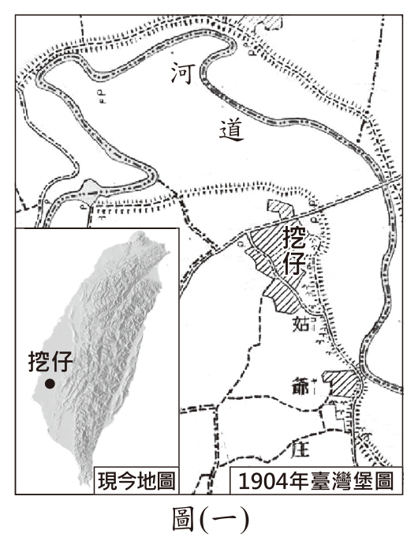
- （A）位於岬灣海岸的灣澳
- （B）鄰近溪流河道的轉彎處
- （C）位處高山之間的小谷地
- （D）台地上的低窪地蓄水成湖
答案：（B）
詳解與考點
正解：題幹要求從聚落所處環境解讀地名，圖中的「挖仔」位在溪流河道轉彎處，地名中的「挖」指河水沖刷形成的彎拗地形，因此最可能是鄰近溪流河道的轉彎處，B為正解。
A：容易把「挖仔」望文生義，聯想到海灣的「灣澳」；但灣澳須位於岬灣海岸，圖中顯示的是內陸溪流河道彎曲，並非海岸，錯誤。
C：高山間的小谷地應見山地谷地環境，與圖中的河道彎曲聚落不符，錯誤。
D：台地低窪積水成湖應有台地與湖泊條件，圖中沒有此類環境特徵，錯誤。
本題考點：地名與環境判讀——不能只看地名字面，須先由地圖辨認河流、海岸、山地或台地等地形，再把地名語意與所在地形相互對照；河道轉彎附近的沖刷、堆積地形，常是聚落命名線索。
第 5 題
某研究於2018年調查發現，臺灣不同地區民眾對於各種社會議題的關注傾向與程度有所差異，其中部分地區的民眾對於自身周遭環境的議題更加關切，例如離島地區。下列何者最可能為離島地區民眾較為關注的議題？
- （A）適當管制房價，降低民眾租屋或購屋的負擔
- （B）落實區域間資源分配，讓民眾獲得同等醫療品質
- （C）管制重工業廢水的排放，避免造成土壤重金屬汙染
- （D）大規模土石流或崩塌，可能導致建築物毀損及人員傷亡
答案：（B）
詳解與考點
正解：離島地區位置偏遠、人口較少，醫療資源與轉診服務較不易取得；題幹問離島民眾較關切的周遭環境議題，落實區域間資源分配、取得同等醫療品質最符合，故 B 為正解。
A：房價與租屋、購屋負擔通常是人口與住宅需求集中的都會區較突出的議題，錯誤。
C：重工業廢水與土壤重金屬汙染較符合重工業集中地區的問題，錯誤。
D：大規模土石流或崩塌主要與山區陡坡環境相關，不是離島最具代表性的公共議題，錯誤。
本題考點：區域差異——公共議題須結合區位、人口與產業特性判斷；離島議題——偏遠性與資源規模常使醫療、交通及公共服務可近性成為重要問題。
第 6 題
圖(二)是臺灣歷史上某地區的地圖。根據內容判斷，此圖最有可能出自下列何者？
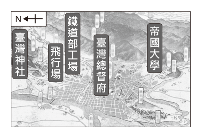
- （A）大航海時代的〈熱蘭遮城鎮鳥瞰圖〉
- （B）清帝國統治時期的《淡水廳志》
- （C）日本統治時期的〈臺北州大觀〉
- （D）戰後臺灣的《最新版臺灣街道圖》
答案：（C）
詳解與考點
正解：題幹地圖標註「臺灣神社、臺灣總督府、帝國大學、飛行場」，這些都是日治時期臺北的代表設施，故可判定出自日本統治時期的〈臺北州大觀〉，C 為正解。
A：〈熱蘭遮城鎮鳥瞰圖〉屬大航海時代的荷治時期，不會出現臺灣總督府或臺灣神社，錯誤。
B：《淡水廳志》屬清帝國統治時期，早於總督府、帝國大學與飛行場的設置，錯誤。
D：戰後臺灣的街道圖不會以「臺灣總督府」與「臺灣神社」作為當時設施標註，錯誤。
本題考點：地圖判讀與臺灣歷史分期——先抓地圖中的機構、建築與地名，再對照其設置時代；日治時期辨識——總督府、神社、帝國大學等標誌，可作為判定日本統治時期的重要線索。
第 7 題
中國史上某作家發表了一部著作，他在書中提倡六項女性應當恢復的自然權利，如表(一)所示。該著作所提倡的主張，最可能與下列何者有關？
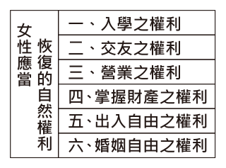
- （A）隋唐時期，西域民族風俗傳入中國
- （B）宋元時期，朱熹學術成就受到推崇
- （C）明末清初，中國引入西方科學知識
- （D）晚清時期，近代歐洲思潮傳入中國
答案：（D）
詳解與考點
正解：表中的入學、交友、營業、掌財產、出入與婚姻自由，主張女性恢復自然權利，屬近代天賦人權與女性解放觀念；這類觀念隨近代歐洲思潮在晚清傳入中國，故 D 為正解。
A：隋唐時期的西域風俗傳入，不能解釋以自然權利為核心的女性權利主張，錯誤。
B：宋元時期朱熹學術受推崇，理學較強調傳統禮教，與題幹主張女性婚姻、出入自由不合，錯誤。
C：明末清初引入的西方科學知識，重點在曆法、天文等科學，不是晚清女性權利思潮，錯誤。它看起來對，是因為同樣涉及西方傳入中國，但須區分西學科技與近代政治、社會思潮。
本題考點：晚清社會思潮——女性自然權利與解放觀念受近代歐洲思潮影響；時代比對——先由主張內容判斷為近代人權觀念，再排除隋唐、宋元與明末清初的不同背景。
第 8 題
「十一世紀時，旅居中國的穆斯林商人，在生活方面可以依照自身的習俗行事，例如他們在廣州的清真寺高塔上，懸掛旗幟、燈火來指引船隻出入港口。但在貿易方面，仍須受到官方機構的管轄，此機構負責收取關稅、接運貢品，並執行香料、珊瑚及象牙等進口商品的專賣，監督商家船隻的活動。」上述的「機構」最可能是下列何者？
- （A）洋行
- （B）驛站
- （C）市舶司
- （D）總理各國事務衙門
答案：（C）
詳解與考點
正解：題幹的「收取關稅、接運貢品、進口商品專賣、監督商家船隻」是中國古代管理海外貿易的職掌，11世紀又屬宋代，符合市舶司，故C為正解。
A：洋行是清末外商從事貿易的機構，不是宋代官方徵稅與管理海外貿易的機關，錯誤。
B：驛站是官方傳遞文書與交通聯絡的設施，不負責外商貿易與關稅，錯誤。
D：總理各國事務衙門是清末外交機構，時代晚於題幹的11世紀，也不執行上述貿易管理職掌，錯誤。
本題考點：市舶司——宋代設置的海外貿易管理機構，負責管理外商、徵收關稅、接運貢品與進口商品專賣；機構判讀——以職掌與時代同時比對，不只看名稱是否與對外事務有關。
第 9 題
「巴黎和會引起中國強烈的民族情緒，在部分知識分子的心中，西方角色從啟蒙者轉變為壓迫者，因此他們逐漸對維護帝國主義、資本主義的西方國家感到失望。在五四運動後，有些知識分子開始轉向世界革命理論，試圖從俄國革命家對於受壓迫民族的呼籲，以及俄國新政權宣布放棄沙皇時代在中國特權的聲明中，找到改變中國的出路。」上述內容最可能與下列何者有關？
- （A）中華民國的建立
- （B）西安事變的發生
- （C）中國共產黨的成立
- （D）文化大革命的發動
答案：（C）
詳解與考點
正解：題幹以巴黎和會、五四運動後知識分子對西方失望，轉向俄國革命理論與俄國新政權為線索；這正是中國共產黨於1921年成立的思想與國際背景，故 C 為正解。
A：中華民國建立於1912年，早於巴黎和會與五四運動，時間不合。
B：西安事變發生於1936年，主因與國共合作及抗日局勢相關，非題幹所述的成立背景。
D：文化大革命發動於1966年，遠晚於題幹所述脈絡。
本題考點：近代中國史事件定位——以巴黎和會、五四運動、俄國革命影響為線索，可連結中國共產黨成立；事件判讀須同時核對時間先後與形成背景。
第 10 題
圖(三)是一幅歷史上的木刻版畫。根據畫中內容判斷，作者的立場最可能是下列何者？
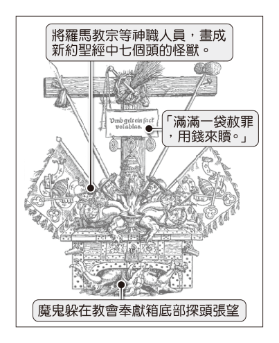
- （A）強調君士坦丁堡教會擁有基督教的領導權
- （B）支持路德教派所提出因信得救的信仰主張
- （C）主張只有希伯來民族能作為耶和華的選民
- （D）認同羅耀拉等人所提倡天主教改革的理念
答案：（B）
詳解與考點
正解：題幹的木刻版畫呈現宗教改革時期對天主教會的諷刺與改革宣傳，對應路德教派主張的「因信得救」，故 B 為正解。
A：君士坦丁堡教會屬東正教脈絡，非路德宗教改革的主張。
C：希伯來民族為耶和華選民是猶太教觀念，與版畫的宗教改革情境不符。
D：羅耀拉推動的是天主教改革，立場與諷刺天主教會的路德派相反。
本題考點：宗教改革——路德教派以「因信得救」批判天主教會；圖像判讀——木刻版畫常用於傳播改革主張，須由畫面立場辨識宗派。
第 11 題
一間跨國咖啡公司打算在某國的傳統文化觀光區設立分店，但卻因為品牌形象與當地建築、傳統飲食習慣不同而引發居民抗議。該公司為此改變店面沿用的品牌風格，除了採用相容於該區環境的色系，還將原本的英文招牌改用當地文字呈現，並增加販售具當地料理特色的創意餐點，希望透過這些舉動降低當地的反彈聲浪。上述跨國公司的舉動，與下列何者最相符？
- （A）成立跨國企業，強化國際分工
- （B）憑藉強勢文化，推動產業轉型
- （C）尊重多元文化，促進文化融合
- （D）凝聚社區認同，發展社區組織
答案：（C）
詳解與考點
正解：跨國咖啡公司因應居民抗議，改用相容色系、當地文字及具在地料理特色的餐點，題眼是調整品牌以尊重在地文化。這些作法符合尊重多元文化、促進文化融合，故 C 為正解。
A：題幹沒有描述跨國企業成立或國際分工，錯誤。
B：公司不是以強勢文化改變地方，而是調整自身以適應地方文化，錯誤。
D：題幹沒有組織居民或發展社區組織，錯誤。
本題考點：全球化與文化——跨國企業進入不同地區時，可能依在地語言、飲食與景觀調整產品及店面；概念判準——尊重在地差異並互相調適屬文化融合，不等於國際分工或社區組織發展。
第 12 題
美國於2022年6月21日起，禁止進口來自中國新疆的商品，因為美國政府認為這些商品是強迫維吾爾人勞動的產物。如果企業想要繼續將在新疆生產的商品出口至美國，則必須提出充足的證據，證明商品的生產過程沒有涉及強迫勞動問題。美國執行上述管制措施的主要理由，最可能是下列何者？
- （A）擴大對外貿易的出超金額
- （B）減少全球化下的貿易障礙
- （C）保障旅外國民的工作權益
- （D）避免侵害人權的商業行為
答案：（D）
詳解與考點
正解：題幹明示管制原因是商品生產可能涉及強迫勞動，要求企業提出未涉及強迫勞動的證據，核心在避免侵害人權的商業行為，故 D 為正解。
A：禁止進口不等於擴大對外貿易出超，兩者沒有直接關係。
B：禁止進口是新增管制，不是減少貿易障礙。
C：題幹討論的是新疆生產過程中的勞動人權，非保障旅外國民工作權益。
本題考點：人權與國際貿易——看見強迫勞動，應連結企業人權責任；措施目的判讀——管制進口的直接理由是避免侵害人權，不以貿易量增減推論。
第 13 題
某大學於學期末時，在校內美食街設立意見回饋箱，消費者有任何建議都可以寫在意見單上投入回饋箱中，學校會參考這些回饋的意見，藉以改善未來美食街的營運方式。根據上述內容判斷，下列何項回饋意見最能提升市場的競爭程度？
- （A）廠商應提供校內師生購買餐點九折優惠
- （B）應要求廠商提供餐點食材的生產履歷證明
- （C）希望廠商販售份量較少且價格較便宜的餐點
- （D）學校應招募更多廠商進駐美食街提供多元餐點
答案：（D）
詳解與考點
正解：市場競爭程度取決於市場中賣方競爭者的多寡；招募更多廠商進駐美食街，可增加供給者與餐點選擇，故 D 最能提升競爭程度。
A：九折優惠是既有廠商的促銷策略，未增加競爭者數量。
B：要求食材生產履歷是食品安全管理，與市場競爭程度無直接關係。
C：調整份量與價格是單一廠商的商品策略，未必增加市場競爭者。它看起來對，是因為便宜餐點對消費者有利，但消費者利益不必然代表競爭程度提高。
本題考點：市場競爭——判斷競爭程度先看賣方家數與替代選擇；增加廠商——更多業者進入同一市場，通常使競爭提高。
第 14 題
一對姊妹先後結婚了，圖(四)是他們之間關係的示意圖。根據圖中內容判斷，甲、乙、丙、丁四人之間最不可能存在下列何種親屬關係？
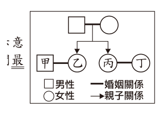
- （A）配偶
- （B）姻親
- （C）直系血親
- （D）旁系血親
答案：（C）
詳解與考點
正解：題幹圖示中乙、丙是同對父母所生的姊妹，甲娶乙、丁娶丙；甲乙與丙丁可為配偶，乙丙為旁系血親，甲與丙可為姻親，但四人之間沒有父母與子女等直系血親關係，故最不可能是 C。
A：甲乙、丙丁分別由婚姻結合，可存在配偶關係。
B：甲與丙、丁與乙可因各自配偶的姊妹關係而形成姻親關係。
D：乙與丙同源於父母、彼此為姊妹，屬旁系血親。它看起來容易被誤判為直系，是因為姊妹同有血緣，但彼此並非一代直接延續。
本題考點：親屬關係——配偶因婚姻而生，姻親由配偶的血親關係而來；血親判斷——父母子女、祖孫為直系，兄弟姊妹為旁系。
第 15 題
表(二)是恬恬為了製作課堂報告所蒐集的資料，統計針對某候選人的新聞在各電視臺報導時間中所占比例。根據表中資料判斷，下列何者最可能是恬恬探究這份資料後，建議閱聽人應注意的事項？
表(二)| 電視臺 | 占播報時間比例 (%) | | |
|---|
| 總比例 | 正面報導 | 負面報導 |
| 水果臺 | 36 | 28 | 4 |
| F News | 12 | 4 | 6 |
| 西水新聞 | 7 | 3 | 2 |
| W 電視 | 28 | 4 | 21 |
| 統計時間： 5 / 1 - 5 / 7 每日19 : 00 ~ 20 : 00的新聞 | | | |
- （A）覺察媒體的報導內容與事實不符
- （B）解讀媒體報導中的性別刻板印象
- （C）留意媒體業者是否持有特定的立場
- （D）關注媒體是否善盡監督政府的責任
答案：（C）
詳解與考點
正解：表中水果臺對該候選人的正面報導占28％、負面報導占4％；W電視正面占4％、負面占21％，同一候選人在不同電視臺的正負面呈現差異很大，閱聽人應留意媒體業者是否持有特定立場，故 C 為正解。
A：表中只有播報時間與正、負面報導比例，沒有事實真偽的證據，不能判定報導與事實不符。
B：表中未提供候選人性別或性別呈現資料，不能解讀性別刻板印象。
D：資料是候選人新聞，未呈現政府監督內容，不能判斷媒體是否善盡監督政府責任。
本題考點：媒體識讀——比較不同媒體對同一事件的正、負面比例，可檢視其可能立場；證據範圍——資料未提供的事實、性別或政府監督資訊，不可逕行推論。
第 16 題
圖(五)為中國於2019至2025年間規劃推動的「西部陸海新通道」，該通道利用鐵路、公路及海運等多種運輸方式以促進物流效率與經濟發展。根據圖中資訊判斷，上述通道的推動最可能具有下列何項效益？
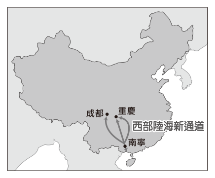
- （A）連結經北極海通往歐洲的航線
- （B）節省與美墨加協定成員的海運時間
- （C）增進與東南亞國協成員的貿易往來
- （D）避免來自西亞的石油運輸受制於他國
答案：（C）
詳解與考點
正解：題幹通道由中國西部經南寧南下出海，南寧鄰近中南半島，最直接可串接東南亞國協市場並促進貿易往來，故 C 為正解。
A：北極海通往歐洲的航線位於中國北方，與此南向陸海通道方向不符。
B：美墨加協定成員位於北美洲，並非此通道主要連結區域。
D：西亞石油主要經印度洋運輸，此通道不能據此避免受制於他國。
本題考點：交通區位效益——先依通道的起訖方向判斷可連結的市場；西部陸海新通道——由中國西部向南出海，最有利於與東南亞國協往來。
第 17 題
小荃想造訪一處風景優美的祕境，但在抵達祕境的入口處，見有一告示牌寫著「上游水壩不定時洩洪，請勿進入溪谷以確保生命安全」，於是決定避開危險另覓他處。圖(六)為上述祕境附近的等高線地形圖，圖中甲、乙、丙、丁何者最可能為該祕境所在地點？
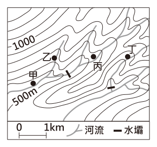
- （A）甲
- （B）乙
- （C）丙
- （D）丁
答案：（A）
詳解與考點
正解：告示警告上游水壩洩洪，祕境應位在溪谷；甲位於兩河交會的谷地低處，等高線呈凹向高處的河谷特徵，最可能受洩洪影響，故 A 為正解。
B：乙位於較高的地形，不是溪谷位置。
C：丙的等高線呈山脊或較高處特徵，非水流匯集的谷地。
D：丁也不在溪谷低處，較不符合上游洩洪的危險情境。
本題考點：等高線判讀——等高線凹向高處為河谷，凸向低處為山脊；水文情境——有上游洩洪風險時，應尋找河流匯集的溪谷低地。
第 18 題
近年來由於新冠肺炎疫情造成嚴重的通貨膨脹，使得甲地的房價及物價高漲，影響其生活品質。此外，因為在鄰國的乙地1天的薪水，在甲地約1小時就賺得到，於是有一部分的甲地人搬至乙地居住，再利用遠距工作或每天通勤至甲地上班，藉以降低房租及生活消費。上述甲地與乙地依序最可能位於何國？
- （A）法國、英國
- （B）美國、墨西哥
- （C）土耳其、希臘
- （D）馬來西亞、新加坡
答案：（B）
詳解與考點
正解：題幹的關鍵條件是甲地房價、物價與薪資都高，乙地薪資與生活成本較低，而且兩地相鄰可遠距工作或每日通勤。美國與墨西哥相鄰，邊境地區存在明顯薪資與生活成本落差，符合甲地為美國、乙地為墨西哥，故 B 為正解。
A：法國與英國隔英吉利海峽，日常跨境通勤不如陸地邊境便利，薪資與生活成本落差也不符題幹，錯誤。
C：土耳其與希臘雖鄰近，但不符合題幹所述由高薪高物價地搬往低成本鄰國並每日通勤的典型組合，錯誤。
D：馬來西亞與新加坡的相鄰與薪資落差容易讓人想到跨境通勤，但題幹設定甲地為高薪高物價地、乙地為低成本居住地，所對應的國家順序應是美國、墨西哥，錯誤。
本題考點：跨國人口移動——判斷跨境通勤須同時核對兩地鄰接性、薪資差距與生活成本；高薪高物價地的勞工若可在鄰國低成本居住並通勤，常形成跨境居住與工作分離。
第 19 題
圖(七)為2022年世界及甲區域的人口年齡及性別資料，根據人口組成判斷，甲區域最可能為下列何者？
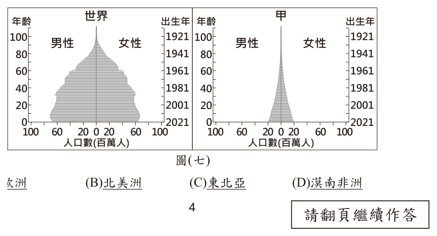
- （A）歐洲
- （B）北美洲
- （C）東北亞
- （D）漠南非洲
答案：（D）
詳解與考點
正解：甲區域人口金字塔底部寬、頂端急縮，表示出生率高、幼年人口比重大，屬擴張型人口結構，最符合人口快速成長的漠南非洲，故 D 為正解。
A：歐洲多為低出生率、人口老化的縮減型，底部較窄。
B：北美洲人口結構較穩定或老化，非底部特別寬的擴張型。
C：東北亞低出生率且高齡化明顯，與甲區域不符。
本題考點：人口金字塔——底寬頂尖代表高出生率與快速成長；區域比對——擴張型最常見於開發程度較低、人口成長快的漠南非洲。
第 20 題
圖(八)是博物館展覽對臺灣歷史上某陶製漏斗狀工具使用方式的介紹。此種工具在十八至十九世紀之間，最多被用於圖(九)中何處？
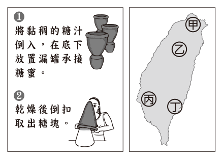
- （A）甲
- （B）乙
- （C）丙
- （D）丁
答案：（C）
詳解與考點
正解：題幹的陶製漏斗狀工具用於製糖分蜜、取糖塊；十八至十九世紀臺灣糖業以南部西南平原最盛，圖中丙位於該區，故 C 為正解。
A：甲在北部，非清代糖業最集中的地區。
B：乙在中部，雖有農業活動，但不是當時製糖核心。
D：丁不在西南嘉南平原的糖業核心區，與工具使用最盛地不符。
本題考點：清代臺灣糖業——製糖工具可作為糖業發展的線索；產業分布——十八至十九世紀糖業以臺灣西南平原最盛。
第 21 題
以下是學者對於中國史上某制度的論述：「此制度的基本涵義是指統治者透過任用非世襲的官員，建立中央集權的政府。這個制度初步發展於東周，在秦王朝統一天下後全面施行，隋唐等朝代都繼續沿用，也影響了周遭的日本、朝鮮，是中國重要的制度。」根據上述內容判斷，該制度最可能是下列何者？
- （A）郡縣制度
- （B）封建制度
- （C）科舉制度
- （D）九品官人法
答案：（A）
詳解與考點
正解：題幹強調統治者任用非世襲官員、建立中央集權，且在東周初步發展、秦統一後全面施行，指的是由中央派官管理地方的郡縣制度，故 A 為正解。
B：封建制度以血緣世襲分封諸侯為主，與非世襲、中央集權相反。
C：科舉制度是以考試選拔人才的選官方式，非地方行政結構，且不合東周初步發展的線索。它看起來對，是因為隋唐繼續沿用且影響日本、朝鮮，但題幹重點是地方行政制度。
D：九品官人法是曹魏陳群所創的選官制度，由中正官評定人才等第，盛行於魏晉南北朝，非地方行政體制。
本題考點：郡縣制度——中央任命可調動的官員治理地方，以強化中央集權；制度辨析——選官方式如科舉、九品官人法，不能與地方行政制度混為一談。
第 22 題
圖(十)是某報紙報導的部分內容，標題中的「？」最適合填入下列何者？
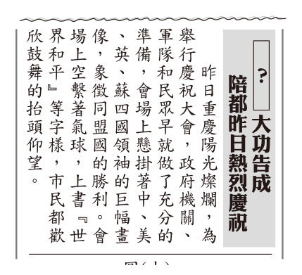
- （A）辛亥革命
- （B）北伐統一
- （C）八年抗戰
- （D）抗美援朝
答案：（C）
詳解與考點
正解：報導中的「陪都」重慶、中美英蘇四國領袖、同盟國勝利與「大功告成」，都指向抗日戰爭勝利；標題應填「八年抗戰」，故 C 為正解。
A：辛亥革命早於抗戰時期，與重慶作為陪都的線索不符。
B：北伐統一也早於抗戰時期，不能對應同盟國勝利。
D：抗美援朝發生於1950年韓戰，中國與美國交戰，與中美英蘇同盟、追求世界和平的情境相反。
本題考點：中國近代史時序——重慶為陪都可鎖定對日抗戰時期；史料判讀——把地點、同盟國與事件結果交叉比對，確認八年抗戰勝利。
第 23 題
「1989年8月19日，奧地利及匈牙利曾在邊界上相鄰的兩個小鎮間，舉辦一場野餐交流活動。活動中，兩鎮之間的木製國界圍籬會被打開三小時，象徵支持沒有隔閡的歐洲。然而，這場野餐會卻成為政治性的脫逃活動。當圍籬一打開，從其他國家特別前來此地的數百男女就迅速衝過邊界，逃離受到共產集團控制、實施計畫經濟的家鄉，抵達了『自由的歐洲』。」上述利用野餐脫逃的民眾，最可能來自圖(十一)中甲、乙、丙、丁何地？
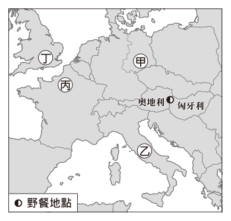
- （A）甲
- （B）乙
- （C）丙
- （D）丁
答案：（A）
詳解與考點
正解：1989年奧匈邊界野餐時，利用開放圍籬逃離計畫經濟共產集團者，以原東德民眾最具代表性；圖中甲位於中歐偏北的原東德所在地，故 A 為正解。
B：乙位於西歐自由陣營，無須藉此逃離共產集團。
C：丙位於南歐自由陣營，與題幹的計畫經濟家鄉不符。
D：丁也屬非共產集團控制的區域，不合脫逃情境。
本題考點：冷戰歐洲——1989年泛歐野餐發生在奧匈邊界，反映鐵幕鬆動；陣營判讀——由計畫經濟、共產集團與逃往自由歐洲的線索鎖定原東德。
第 24 題
某國中學生自治組織選舉前，針對二種投票方式進行調查，其中願意投票的人數比例如表(三)所示。根據上述內容判斷，關於此一調查結果，下列敘述何者最適當？
表(三)| 投票方式 年級 | 實體 投票 | 網路 投票 |
|---|
| 七 | 48% | 93% |
| 八 | 49% | 95% |
| 九 | 42% | 90% |
- （A）實體投票比網路投票更能形成民意
- （B）使用科技可能有洩漏個人資料的風險
- （C）實體投票比網路投票更符合無記名原則
- （D）使用科技能提升學生參與公共事務的程度
答案：（D）
詳解與考點
正解：表中七、八、九年級願意網路投票的比例分別為93％、95％、90％，都高於實體投票的48％、49％、42％；可推論使用科技能提升學生參與公共事務的程度，故 D 為正解。
A：表只比較願意投票比例，沒有資料判斷哪一種方式更能形成民意。
B：表未提供個人資料蒐集或外洩情形，不能推論有個資風險。
C：表未呈現投票是否無記名，不能比較兩種方式的無記名程度。
本題考點：科技與公民參與——比較投票意願比例時，較高比例可支持參與度提升的推論；證據範圍——表中未測量的民意品質、個資與無記名，不能自行補充。
第 25 題
下列是某地方政府勞工局處理一件勞資糾紛的部分過程：勞工局：「根據貴公司的員工出勤紀錄，員工確實常加班工作，依法雇主應給付加班費。」雇主：「可是我又沒強迫員工留下來加班，有時候他們留在公司也不一定是為了工作，只是下班後不想那麼早離開而已。」勞工局：「依照《勞動事件法》規定，出勤紀錄內記載的勞工出勤時間，都預設勞工是經雇主同意而加班工作。若雇主認為員工並非因加班工作而留在公司，則須由雇主提出證明。」根據上述《勞動事件法》的規定判斷，下列何者最可能是當初立法時考量的理由？
- （A）消除職場上出現的性別歧視行為
- （B）確保勞工可維持基本的生活水準
- （C）禁止超時工作以保障童工的身心健康
- （D）平衡勞資雙方之間權力不對等的關係
答案：（D）
詳解與考點
正解：題幹規定出勤紀錄中的出勤時間預設為經雇主同意加班，若要推翻須由雇主證明；此舉是減輕勞工舉證困難、平衡勞資權力與資訊不對等，故 D 為正解。
A：消除性別歧視是平等權保障問題，非本規定分配舉證責任的目的。
B：確保基本生活水準較涉及最低工資或社會福利，非加班事實的舉證規則。它看起來對，是因為加班費與收入有關，但本題的核心是誰負擔證明責任。
C：童工保護著重工時限制與健康保障，非本題規定。
本題考點：勞動事件法的舉證規則——出勤紀錄記載的時間推定為經同意加班，雇主主張非加班時應提出證明；勞動保障——以舉證責任分配平衡勞資權力不對等。
第 26 題
圖(十二) 是甲國在近三十年間，三種已婚女性的勞動力參與率。根據圖中資訊，可推論出該國社會存在下列何種現象？民間人口中，已有工作者及正在找工作者的比率。
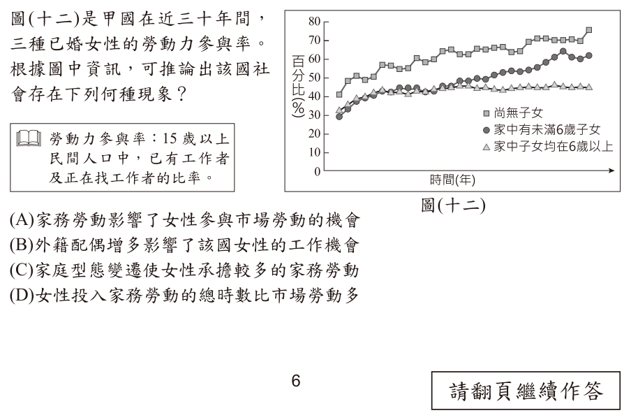
- （A）家務勞動影響了女性參與市場勞動的機會
- （B）外籍配偶增多影響了該國女性的工作機會
- （C）家庭型態變遷使女性承擔較多的家務勞動
- （D）女性投入家務勞動的總時數比市場勞動多
答案：（A）
詳解與考點
正解：圖中已婚女性的勞動力參與率隨是否有子女及子女年齡而不同，顯示育兒、家務等家庭責任會影響女性投入市場勞動的機會，故 A 為正解。
B：圖中沒有外籍配偶人數或就業資料，不能作此推論。
C：圖中未呈現家庭型態變遷，也不能判定女性承擔較多家務。
D：勞動力參與率不等於家務與市場勞動總時數，無法比較兩者多寡。
本題考點：性別分工——育兒與家務責任可能限制女性參與市場勞動；統計圖判讀——只能推論圖中比較的勞參率差異，不能延伸到未提供的家庭型態或工時資料。
第 27 題
土耳其扼黑海出入馬摩拉海的咽喉，因為原有天然航道的航運交通量日益增加，政府計畫興建圖(十三)中的新運河，該計畫除了引發國內正反意見的討論外，也引起黑海周邊國家的高度關注。上述運河完工後所帶來的影響最可能為下列何者？
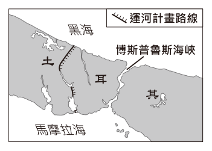
- （A）土耳其將會喪失原有的「歐亞陸橋」稱號
- （B）土耳其的經濟海域範圍將因此而大幅增加
- （C）黑海的海洋生物進入馬摩拉海的機率下降
- （D）船隻等候通過博斯普魯斯海峽的時間減少
答案：（D）
詳解與考點
正解：新運河與既有博斯普魯斯海峽並行，可分流日益增加的船隻，因而減少船隻等候通過原海峽的時間，故 D 為正解。
A：土耳其的歐亞陸橋地位來自橫跨歐、亞兩洲，興建運河不會使其喪失此稱號。
B：運河位於國境內，不能因此大幅增加經濟海域範圍。
C：新運河仍連通黑海與馬摩拉海，海洋生物往來機率不會因而下降。
本題考點：交通建設效益——平行航道可分流運量、縮短等候時間；海域概念——境內運河不會改變經濟海域範圍。
第 28 題
圖(十四)中的國家積極發展某一種綠色能源。根據圖中資訊判斷，下列何者最可能為該國所發展的綠色能源及選擇的理由？
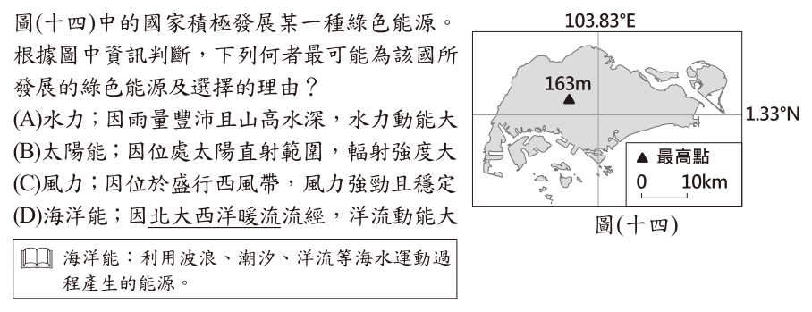
- （A）水力；因雨量豐沛且山高水深，水力動能大
- （B）太陽能；因位處太陽直射範圍，輻射強度大
- （C）風力；因位於盛行西風帶，風力強勁且穩定
- （D）海洋能；因北大西洋暖流流經，洋流動能大程產生的能源。
答案：（B）
詳解與考點
正解：題幹圖示座標約為 1.33°N、103.83°E，指向近赤道的新加坡；近赤道地區終年太陽高度角大、太陽輻射強，故最適合發展太陽能，B 為正解。
A：新加坡地勢低平，沒有山高水深所形成的強大水力動能，錯誤。
C：赤道附近屬無風帶，並非盛行西風帶，不能以西風強勁穩定作為理由，錯誤。
D：北大西洋暖流不流經新加坡附近海域，錯誤。
本題考點：經緯度定位與綠色能源——先由緯度、經度判定地點，再連結該地的自然條件；太陽能判準——近赤道地區日照與太陽輻射通常較強；風力、水力、海洋能須分別確認風帶、地勢與洋流條件。
第 29 題
小綸從網站上取得2021年中國各省級行政區年降水量資料，他以當年全國平均降水量691.6毫米作為標準，若省級行政區的年降水量低於此一數值，則在該區塗上深灰色。根據上述原則，小綸繪製出的地圖最可能為下列何者？
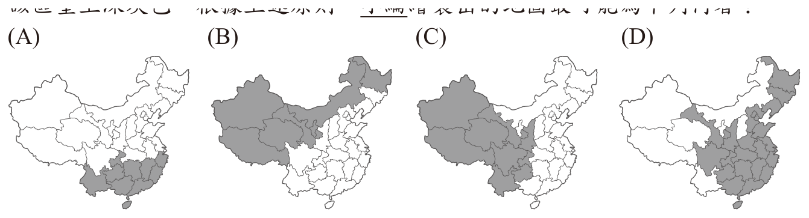
本題選項為上圖中的 A／B／C／D，請對照圖片作答。
答案：（B）
詳解與考點
正解：題幹以全國平均 691.6 公釐為界，題眼是判斷低於平均值的地區分布。中國年降水量大致由東南沿海向西北內陸遞減，西北、華北與東北較可能低於平均值；B 將這些內陸偏北地區塗為深灰、東南多雨地區留白，符合規律，故 B 為正解。
A：深灰區的分布未集中於西北、華北與東北等較乾燥地帶，錯誤。
C：把東南沿海等較多雨區域塗為深灰，與降水由東南向西北遞減的格局不符，錯誤。
D：將西南或東南的多雨地區列為低於平均降水量，錯誤。
本題考點：中國降水空間規律——由東南沿海向西北內陸遞減；主題圖判讀——先確認圖例的深灰代表「低於平均」，再把顏色分布與區域氣候規律比對。
第 30 題
碳匯是指能夠吸收及儲存含碳化合物的天然或人工「倉庫」，如森林、草原、濕地、土壤、海洋等。為了達成2050年「碳中和」目標，各國除了減少二氧化碳的排放之外，也積極擴大國家的碳匯。根據上文所述，若要增加一國的碳匯，則下列何種方法最為適切？
- （A）以焚林的方式，快速取得種植經濟作物的土地
- （B）於屋頂上方設置太陽能發電板，增加電力供給
- （C）恢復曾經消失的農地，採友善環境的耕作方式
- （D）選用當地食材以減少運輸距離，降低食物里程
答案：（C）
詳解與考點
正解：題幹問的是「增加碳匯」，關鍵在於增加吸收與儲存含碳化合物的能力。恢復農地並採友善環境耕作，可提升土壤儲碳，符合增加碳匯的做法，故 C 為正解。
A：焚林會破壞森林碳匯，且燃燒會排放二氧化碳，錯誤。
B：屋頂設置太陽能板可減少化石燃料發電的排放，但不會直接增加吸收、儲存碳的倉庫，錯誤。它看起來對，是因為太陽能也是減碳措施，但題目限定的是增加碳匯。
D：選用當地食材可減少運輸造成的排放，屬減少排放策略，不是擴大碳匯，錯誤。
本題考點：碳中和——可由減少排放與擴大碳匯共同達成；碳匯判準——森林、草原、濕地、土壤與海洋等能吸收並儲存碳的系統才屬碳匯。
第 31 題
莎綺去北大武山登山的時候，看到山路上有一些歷史建築如圖 ( 十五) 所示。根據圖中碑文摘譯的內容判斷，若莎綺上網檢索這些歷史建築興建的時局背景，最可能會出現下列何者？
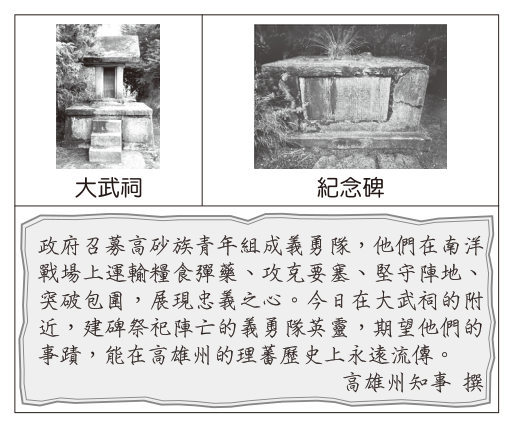
- （A）強化皇民化運動的推展
- （B）宣傳日俄戰爭即將勝利
- （C）實施開山撫番推動漢化
- （D）發起原住民族正名運動
答案：（A）
詳解與考點
正解：碑文提及政府召募高砂族青年赴南洋運糧、攻要塞，題眼是戰時動員原住民族前往南洋，指向太平洋戰爭期間的高砂義勇隊；此時日治政府強化皇民化運動，故 A 為正解。
B：日俄戰爭的主要戰場不在南洋，且不符召募高砂族青年赴南洋的情境，錯誤。
C：開山撫番是清領時期的政策，與日治戰時動員不符，錯誤。
D：原住民族正名運動屬 1980 年代以後的社會運動，時代不符，錯誤。
本題考點：日治時期戰時動員——見「高砂族青年」「南洋」「攻要塞」等線索，連結太平洋戰爭；臺灣史時序判讀——清領開山撫番、日治皇民化與戰後原住民族正名運動須依年代區分。
第 32 題
理加頭目所屬部落與鄰近部落衝突頻繁，而荷蘭人未能妥善協助調停，心生不滿的他在日本人勸說下，帶族人前往日本尋求援助。理加返鄉後，立即遭到荷蘭人的監禁，進而引發日人挾持臺灣長官的衝突事件，更導致江戶幕府一度關閉荷蘭在日本的商館以作為制裁。上述事件最可能發生於下列何時何地？
- （A）十六世紀的澎湖
- （B）十七世紀的大員
- （C）十八世紀的淡水
- （D）十九世紀的卑南實際統治日本的機構。
答案：（B）
詳解與考點
正解：題幹同時出現荷蘭長官、江戶幕府與日本商館，關鍵是荷蘭統治臺灣的時期。荷治時期為 1624 至 1662 年，統治中心在今臺南附近的大員，理加事件相關背景也在臺灣南部荷蘭控制區，故 B 為正解。
A：十六世紀的澎湖早於荷蘭在大員統治臺灣的時期，錯誤。
C：十八世紀的淡水已非荷治時期，且不符江戶幕府制裁荷蘭商館的背景，錯誤。
D：十九世紀的卑南時代與地點均不符，錯誤。它看起來容易受「日本人」影響而聯想到近代日治，但「江戶幕府」正可鎖定 17 世紀。
本題考點：荷治臺灣——1624 至 1662 年的統治中心為大員；歷史定位——同時利用政權名稱、制度與地名交叉判斷年代及區域。
第 33 題
表(四)是某一時期臺灣鳳梨罐頭銷售至美國、日本、中國大陸及西德的官方統計數據。根據表中內容判斷，甲、乙、丙、丁何者最可能是中國大陸？
表(四)| 貿易 對象 年分 | 甲 | 乙 | 丙 | 丁 |
|---|
| 1946 | 0 | 0 | 0 | 60,696 |
| 1950 | 38,134 | 203 | 0 | 0 |
| 1955 | 182,000 | 33,836 | 153,963 | 0 |
| 1960 | 269,338 | 676,098 | 737,723 | 0 |
- （A）甲
- （B）乙
- （C）丙
- （D）丁
答案：（D）
詳解與考點
正解：表中丁在 1946 年為 60,696，1950、1955、1960 年皆為 0；題眼是 1949 年後兩岸對峙使對中國大陸貿易中斷，因此丁最可能是中國大陸，D 為正解。
A：甲自 1950 年的 38,134 增至 1960 年的 269,338，持續有貿易往來，不符中斷情形，錯誤。
B：乙自 1950 年的 203 增至 1960 年的 676,098，持續成長，不符中斷情形，錯誤。
C：丙雖在 1950 年為 0，但 1955 年為 153,963、1960 年為 737,723，後續仍有往來，不符，錯誤。
本題考點：戰後臺灣貿易轉向——1949 年後兩岸對峙使對中國大陸貿易中斷；統計表判讀——先找出各欄在關鍵年代前後由有量轉為持續 0 的變化。
第 34 題
圖(十六)是某大學公布欄所張貼的海報，根據圖中所列的演講者經歷判斷，下列何者最可能是他曾經行使過的職權？
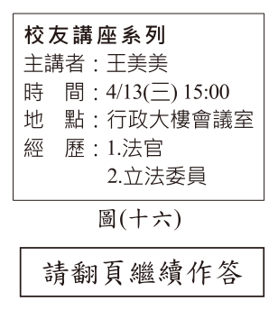
- （A）為審核各機關送交的決算挑燈夜戰
- （B）提請總統任命行政院所屬部會首長
- （C）對司法院院長被提名人行使同意權
- （D）在掌握事證後彈劾違法失職的法官
答案：（C）
詳解與考點
正解：海報所列經歷包含立法委員，題眼是將職位對應憲政機關職權。立法院對司法院院長被提名人行使同意權，故 C 為正解。
A：審核決算的職責屬監察院審計部，非立法委員職權，錯誤。
B：行政院所屬部會首長由行政院長提請總統任命，非立法委員職權，錯誤。
D：彈劾違法失職法官屬監察院職權，非立法委員職權，錯誤。
本題考點：中央政府機關職權——立法院行使法律案、預算案及重要人事同意權等職權；職權判準——先辨識行為是審計、任命、同意或彈劾，再對應立法院、行政院或監察院。
第 35 題
甲、乙二則資料呈現不同時代官方興建公共建設的相關情況：甲資料：統治者為了加強對國內各地的控制，便於運送物資及兵力，下令修鑿運河，強行徵召數百萬人民從事勞役。乙資料：某地方政府研擬興建社會住宅，當地議會要求依法召開公聽會聽取附近居民的意見，作為後續制定政策的參考。根據甲、乙二項資料判斷，關於不同時代官方興建公共建設作法的敘述，下列何者最適當？
- （A）甲資料顯示當時的市場勞動權利受法律保障
- （B）乙資料顯示當時的政府權力受到約束與制衡
- （C）二則資料皆顯示公共建設以促進公平正義為主要考量
- （D）二則資料皆顯示公共意見是經由大眾反覆討論而形成
答案：（B）
詳解與考點
正解：乙資料的關鍵是地方議會要求「依法召開公聽會」，聽取居民意見後作為政策參考，顯示政府施政受到法律與議會監督，不可任意行使權力，故 B 為正解。
A：甲資料是統治者強行徵召數百萬人民勞役，不能顯示市場勞動權利受到法律保障，錯誤。
C：甲資料為加強控制、運送物資與兵力而強制勞役，並非以促進公平正義為主要考量，錯誤。它看起來對，是因為乙資料有聽取居民意見的程序，但不能用乙的目的概括甲。
D：甲資料是統治者下令與強制徵召，未呈現大眾反覆討論形成公共意見，錯誤。
本題考點：民主政治與法治——依法舉行公聽會、受議會監督，表示政府權力受到約束與制衡；史料比較——兩則資料應分別判讀，不能把一方的程序或價值套用到另一方。
第 36 題
老師安排同學至地方法院參觀，並讓甲、乙、丙、丁四位同學在模擬法庭中扮演不同的角色，如圖(十七)所示。根據我國法律規定及圖中情境判斷，下列關於他們四人的臺詞，何者最適當？
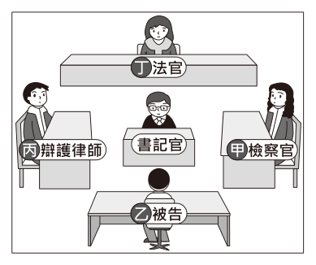
- （A）甲：我依據相關犯罪事證依法起訴乙
- （B）乙：我承認錯誤，我會儘早償還借款
- （C）丙：我希望甲審酌證據後判決乙無罪
- （D）丁：我判決原告勝訴，撤銷行政處分
答案：（A）
詳解與考點
正解：圖中甲為檢察官、乙為被告、丙為辯護律師、丁為法官；刑事訴訟中，檢察官依犯罪事證代表國家起訴被告，故 A 為正解。
B：償還借款是民事債務關係的處理，不能對應本題的刑事被告角色，錯誤。
C：丙為辯護律師，可以為乙辯護，但審酌證據並判決無罪的是法官，不是甲，錯誤。
D：撤銷行政處分屬行政訴訟的裁判內容，與本題刑事模擬法庭不符，錯誤。
本題考點：刑事訴訟角色——檢察官負責偵查、起訴，辯護律師為被告辯護，法官依法審理與判決；訴訟類型判斷——借款屬民事、行政處分爭議屬行政救濟，須與刑事案件區分。
第 37 題
「社會企業」是近年頗受關注的概念，其中公司型的社會企業透過商業活動營利，以改善社會或環境問題為目標，並非以讓出資者獲利為唯一考量，而企業獲得的利潤，也將繼續投入改善社會或環境問題的商業活動，希望讓社會企業得以永續經營。下列何種作法與上述提及的企業經營模式最相符？
- （A）運用低價策略創造企業優勢
- （B）制定法律推行友善勞工政策
- （C）提倡公平貿易幫助小農發展
- （D）募集善心捐款扶助弱勢群體
答案：（C）
詳解與考點
正解：題幹定義公司型社會企業以商業活動營利、改善社會或環境問題，並將利潤再投入，關鍵在「商業方式」與「社會目標」。C 的公平貿易透過交易幫助小農發展，兼具商業活動與社會目標，故為正解。
A：低價策略是企業競爭策略，未必以改善社會或環境問題為目標，錯誤。
B：制定法律推行友善勞工政策是政府的立法作為，不是企業經營模式。
D：募集善心捐款能扶助弱勢，但屬慈善捐助，並非以商業活動永續經營；它看起來對，是因為同樣關懷弱勢，卻缺少社會企業必要的交易與利潤再投入機制。
本題考點：社會企業——以商業活動達成社會或環境目標，並將利潤再投入；判斷方法——選項須同時具備交易或營利模式與改善社會問題的目的。
第 38 題
某日新聞報導有位失智症患者將土地、房屋贈送給陌生人的糾紛，由於小明的爺爺是中度失智症患者，家人擔心爺爺也會做出類似行為而導致權益受損，便向律師諮詢。律師建議家屬可向法院提出聲請，對爺爺作出監護宣告。上述律師的建議內容應是希望達成下列何項法律效果？
- （A）讓爺爺成為無行為能力人，以保障其財產
- （B）讓爺爺成為限制行為能力人，以保障其財產
- （C）讓爺爺成為無行為能力人，以保障其契約自由
- （D）讓爺爺成為限制行為能力人，以保障其契約自由
答案：（A）
詳解與考點
正解：題幹明示法院作出監護宣告，關鍵在監護宣告的法律效果。受監護宣告之人為無行為能力人，法律行為須由監護人代理，可避免失智者自行贈與不動產而損及財產，故 A 為正解。
B：限制行為能力人不是監護宣告的效果，錯誤。
C：監護宣告的目的在保護受宣告人的人身與財產利益，不是保障其契約自由，錯誤。
D：限制行為能力與保障契約自由均不符監護宣告的法律效果，錯誤。它看起來容易與輔助宣告混淆，但受輔助宣告人原則上不喪失行為能力，僅民法第 15 條之 2 列舉行為如贈與、不動產處分等須經輔助人同意。
本題考點：監護宣告——受監護宣告之人為無行為能力人，法律行為由監護人代理；監護與輔助區分——輔助宣告並非使本人全面喪失行為能力。
第 39 題
2020年之前，臺灣與日本都面臨勞力短缺的問題，但日本提供比臺灣更高的薪資吸引國際移工，因此許多菲律賓籍移工較願意前往日本工作。不過2022 年底時，許多在日本工作的菲律賓籍移工發現，雖然每個月都拿出相同金額的日幣兌換成菲律賓披索匯回家鄉，但年底換到的菲律賓披索卻比年初減少了約10%，因此他們打算改往澳洲工作。上述國際移工變更工作地的考量，其原因之一最可能為下列何者？
- （A）菲律賓披索相對日幣升值
- （B）菲律賓披索相對新臺幣貶值
- （C）去臺灣工作的機會成本比去日本低
- （D）去澳洲工作的機會成本比去日本高
答案：（A）
詳解與考點
正解：同額日幣在年底換得的菲律賓披索比年初少約 10%，表示日幣相對披索貶值，也就是菲律賓披索相對日幣升值，故 A 為正解。
B：題幹比較的是日幣與菲律賓披索，未提供新臺幣匯率資訊，錯誤。
C：題幹未比較赴臺灣與赴日本的成本及效益，不能判定機會成本高低，錯誤。
D：題幹亦未提供赴澳洲與赴日本的成本及效益，不能判定機會成本高低，錯誤。
本題考點：匯率判讀——同額外幣可換得的本國貨幣變少，表示本國貨幣相對外幣升值；外籍移工匯款——應以工作地貨幣兌換家鄉貨幣的匯率判斷實際所得。
第 40 題
「俄烏戰爭以來，歐盟對俄羅斯採取大規模的制裁措施，其中立陶宛於2022年6月 18日，對經其領土進出俄羅斯加里寧格勒的貨運火車實施限制，因而引發俄羅斯強烈不滿。此一事件也凸顯出加里寧格勒的重要性。」圖 (十八) 顯示加里寧格勒的位置，根據上文及圖中資訊判斷，其重要性可用下列何者來說明？
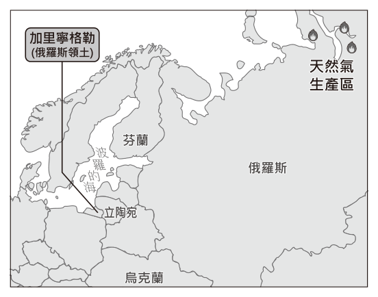
- （A）作為俄羅斯與東北亞國家間的貿易前哨站
- （B）為俄羅斯貨物經波羅的海出太平洋的港口
- （C）位處俄羅斯天然氣輸送至芬蘭的最短路徑上
- （D）是俄羅斯對抗北大西洋公約組織的軍事基地
答案：（D）
詳解與考點
正解：圖中加里寧格勒是俄羅斯位於波羅的海沿岸、夾在立陶宛與波蘭之間的飛地，周邊是北大西洋公約組織成員國；它適合作為俄羅斯前進部署、對抗北大西洋公約組織的軍事據點，故 D 為正解。
A：加里寧格勒位於歐洲波羅的海，不是俄羅斯與東北亞國家之間的貿易前哨站，錯誤。
B：波羅的海可通往大西洋方向，不能作為俄羅斯貨物經波羅的海出太平洋的港口，錯誤。
C：圖示位置不能支持它位於俄羅斯天然氣輸送至芬蘭的最短路徑上，且此說法無法說明立陶宛限制過境貨運引發的戰略意義，錯誤。它看起來對，是因為加里寧格勒確在波羅的海附近，但其關鍵是飛地的軍事位置，不是對芬蘭的輸氣路徑。
本題考點：飛地的地緣戰略——領土與本國本土分離、位於他國包圍或鄰近區時，常具補給與軍事部署的重要性；地圖判讀——結合位置、周邊國家與組織關係判斷戰略功能。
第 41 題
表(五)為三個不同日期臺灣部分水庫的蓄水量百分比，這些水庫在 2021年5月31日的蓄水量狀況，可能與下列何者關係最為密切？
表(五)| 水庫名稱 | 所在 行政區 | 蓄水量百分比 (%) | | |
|---|
| | 2020年 5月31日 | 2020年 11月30日 | 2021年 5月31日 |
| 翡翠水庫 | 新北市 | 80.9 | 94.6 | 62.1 |
| 石門水庫 | 桃園市 | 67.4 | 49.7 | 12.5 |
| 鯉魚潭水庫 | 苗栗縣 | 53.7 | 39.4 | 5.8 |
| 德基水庫 | 臺中市 | 42.7 | 38.2 | 2.7 |
| 曾文水庫 | 嘉義縣 臺南市 | 27.7 | 23.1 | 4.1 |
- （A）2021年梅雨鋒面提早報到
- （B）2021年夏末對流雨較不旺盛
- （C）2020年冬季迎風面的地形雨偏少
- （D）2020年缺乏颱風帶來的豐沛雨量
答案：（D）
詳解與考點
正解：表中 2021 年 5 月 31 日石門、鯉魚潭、德基、曾文水庫分別僅 12.5％、5.8％、2.7％、4.1％，多座水庫蓄水嚴重偏低；關鍵是 2020 年缺乏颱風帶來的豐沛雨量，導致後續蓄水不足，故 D 為正解。
A：梅雨鋒面若提早報到，通常有助補注水庫，與蓄水嚴重不足的情況不符，錯誤。
B：夏末對流雨較不旺盛無法充分說明多座水庫長期大幅下降，錯誤。
C：冬季迎風面的地形雨偏少會影響部分地區，但不足以解釋表中各地水庫普遍嚴重偏低，錯誤。
本題考點：臺灣水資源——颱風常帶來重要的水庫集水區降雨；資料表判讀——比較不同日期的蓄水百分比，辨識多座水庫是否出現一致性下降，再連結主要降雨來源。
第 42 題
某民意代表在服務處設立法律諮詢服務站，表(六) 是2020年及2021年法律諮詢服務件數的統計資料，在2020年的刑事案件中，超過半數屬於告訴乃論，而2021年則有過半數的刑事案件屬於非告訴乃論。根據上述內容判斷，在2020年及2021年的諮詢服務中，可採調解方式處理的件數可能為下列何者？
表(六)| 時間 類型 | 2020 年 | 2021 年 |
|---|
| 民事事件 | 200 | 230 |
| 刑事案件 | 180 | 150 |
| 法律諮詢 服務總數 | 380 | 380 |
- （A）2020年70件，2021年100件
- （B）2020年100件，2021年70件
- （C）2020年300件，2021年300件
- （D）2020年330件，2021年330件
答案：（C）
詳解與考點
正解：可調解的案件包括民事事件與告訴乃論刑事案件。2020 年民事有 200 件，刑事 180 件中告訴乃論超過半數，因此可調解件數可能為 300 件；2021 年民事有 230 件，刑事 150 件中告訴乃論未過半數，因此可調解件數也可能為 300 件，故 C 為正解。
A：2020 年僅 70 件少於民事事件的 200 件，不可能；2021 年 100 件也少於民事事件的 230 件，不可能，錯誤。
B：2020 年 100 件少於民事事件的 200 件，不可能；2021 年 70 件少於民事事件的 230 件，不可能，錯誤。
D：2020 年若為 330 件，代表告訴乃論為 130 件，雖可能；但 2021 年若為 330 件，代表告訴乃論為 100 件，超過刑事 150 件的一半，與題幹「過半數屬非告訴乃論」矛盾，錯誤。
本題考點：調解範圍——民事事件與告訴乃論刑事案件可以調解，非告訴乃論刑事案件不以調解處理；表格推論——先以民事件數為下限，再依「超過半數」或「未過半數」換算刑事告訴乃論可能範圍。
第 43 題
下列何項展品，最可能屬於該博物館的主要館藏？
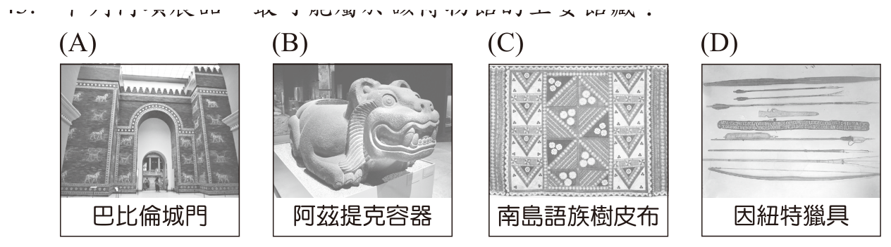
本題選項為上圖中的 A／B／C／D，請對照圖片作答。
答案：（B）
詳解與考點
正解：題幹所指博物館為墨西哥市國立人類學博物館，主要館藏應以當地中美洲古文明為主；B 的阿茲提克容器屬中美洲文物，最可能是主要館藏，B 為正解。
A：巴比倫城門屬兩河流域文明，不是墨西哥中美洲古文明的主要館藏，錯誤。
C：南島樹皮布屬太平洋地區文化，不是該館主要蒐藏範圍，錯誤。
D：因紐特獵具屬北極地區文化，不是該館主要蒐藏範圍，錯誤。
本題考點：博物館館藏判讀——先確認博物館所在地與主題，再將文物的文明區域對應；中美洲古文明——阿茲提克文化與墨西哥地區密切相關。
第 44 題
圖(十九)神官雕像手中所持的物品，最可能是下列何者？
- （A）玉米
- （B）橄欖
- （C）小麥
- （D）稻米
答案：（A）
詳解與考點
正解：題幹的神官雕像所持物品，應連結美洲古文明的原產主食作物。玉米原產中美洲，是馬雅與阿茲提克等文明倚重的主食，故 A 為正解。
B：橄欖主要原產於地中海地區，非美洲古文明的代表性主食作物。
C：小麥主要原產於西亞，與題幹所示美洲古文明不符。
D：稻米主要原產於亞洲，非此雕像所指涉的作物。
本題考點：作物原產地——玉米原產中美洲，橄欖常見於地中海，小麥起源於西亞，稻米起源於亞洲；文明判讀——將文物、地區與代表性作物相互對照。
第 45 題
文中博物館的展品說明，最可能以何種語文為主？
- （A）英文
- （B）法文
- （C）葡萄牙文
- （D）西班牙文
答案：（D）
詳解與考點
正解：題幹地點是墨西哥首都，且說展品說明受殖民歷史影響而採當地官方語文；墨西哥曾受西班牙殖民，西班牙文是當地最主要的通行語言，也就是題文所稱的官方語文，故 D 為正解。
A：英文並非墨西哥因殖民歷史形成的主要通行語文，錯誤。
B：法文並非墨西哥的主要通行語文，錯誤。
C：葡萄牙文主要與巴西的葡萄牙殖民歷史相關，非墨西哥，錯誤。
本題考點：拉丁美洲殖民遺緒——西班牙殖民地多使用西班牙文，葡萄牙殖民地巴西多使用葡萄牙文；區域判讀——先由首都與古文明線索鎖定墨西哥，再連結殖民語言。
第 46 題
多數國家使用0～9這十個數字作為車牌編碼的組合，但我國僅使用其中九個數字。根據文中內容判斷，其原因最可能為下列何者？
- （A）倫理價值具有約束力
- （B）民間習俗具有強制力
- （C）法律規定受宗教信仰影響
- （D）政府施政受社會規範影響
答案：（D）
詳解與考點
正解：文中政府因民眾認為數字「4」觸霉頭而不再用於新車牌，題眼是民間習俗如何影響政府的編碼決定；這說明政府施政受社會規範影響，故 D 為正解。
A：倫理價值可形成社會期待，但題幹不是在說倫理對個人的直接約束，錯誤。
B：民間習俗本身沒有國家強制力，錯誤。它看起來對，是因為禁用「4」源自習俗；但具有規範效力的是政府受習俗影響後所作的車牌規定。
C：文中未指出法律規定直接受到宗教信仰影響，錯誤。
本題考點：社會規範——習俗、倫理、宗教與法律皆可影響行為；政府施政判準——民意與習俗影響政府制定或調整措施時，應判為政府施政受社會規範影響。
第 47 題
文中關於民眾選擇車牌號碼的敘述，最適合用來說明下列哪一觀點？
- （A）廠商之間的價格競爭將使消費者受惠
- （B）市場的競爭程度越高對消費者越有利
- （C）負向誘因促使民眾的行為發生改變
- （D）不同人對同一誘因的感受有所不同
答案：（D）
詳解與考點
正解：文中有人願意多付費選 6666、8888、9999 等特殊號碼，有人偏好生日或紀念日號碼，也有人不在意而接受一般車牌；同一選號機會對不同人的吸引力不同，故 D 為正解。
A：題幹沒有不同廠商之間的價格競爭，錯誤。
B：題幹未比較市場競爭程度，也無從判斷競爭對消費者的影響，錯誤。
C：民眾因偏好不同，對選號機會及額外費用的感受不同；題幹重點不是以懲罰促使行為改變的負向誘因，錯誤。
本題考點：誘因——會影響人們的選擇與行為；個別差異判準——同一機會或價格對不同人產生不同反應時，表示個人對同一誘因的感受不同。
第 48 題
某民眾的車牌被別人惡意拔走，導致他違反文末所述的規定而受罰。若該民眾對此處罰不服，依法採行下列何種處理方式最適當？
- （A）向中央立法機關提出訴願
- （B）向地方行政機關提出請願
- （C）透過行政救濟途徑維護權益
- （D）透過刑事訴訟途徑維護權益
答案：（C）
詳解與考點
正解：車牌遭惡意拔走而使車主受《道路交通管理處罰條例》處罰，題幹問的是對該行政處罰不服的救濟；行政處分爭議應透過行政救濟途徑維護權益，故 C 為正解。
A：訴願不是向中央立法機關提出，錯誤。
B：請願是向政府機關表達意見或提出建議，不能作為撤銷或變更處分的救濟程序，錯誤。
D：拔走車牌的人可能另有刑事責任，但本題問的是車主對行政處罰不服的處理方式，不是追究拔牌者刑責，錯誤。
本題考點：行政救濟——不服行政處分時，可依法循訴願、行政訴訟等程序救濟；爭點辨識——先分清是要挑戰行政處罰，還是要追究他人的刑事責任。
第 49 題
巴斯人的宗教信仰，最可能是下列何者？
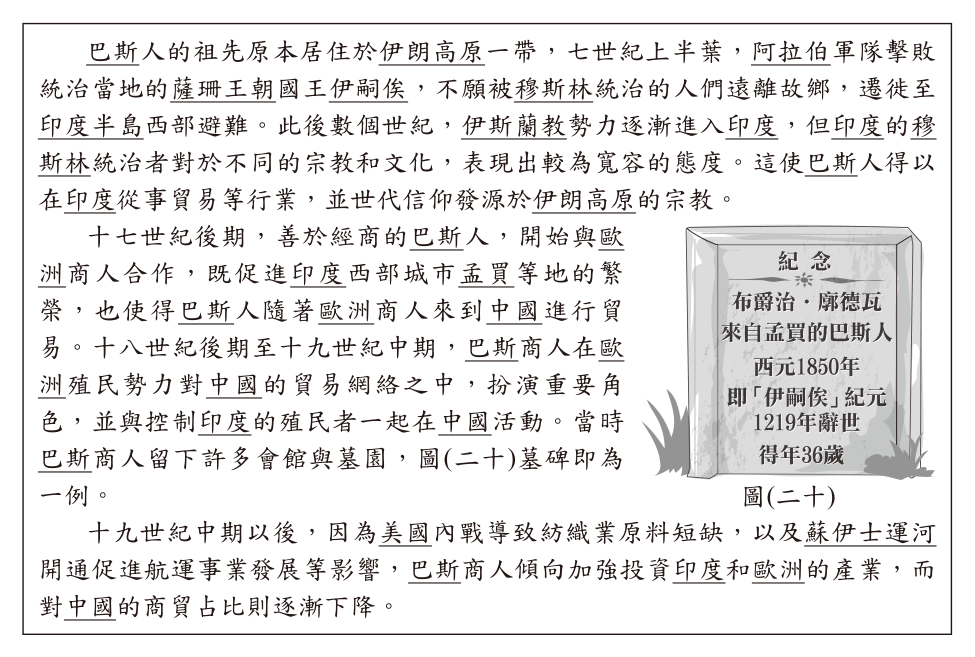
- （A）祆教
- （B）佛教
- （C）猶太教
- （D）基督教
答案：（A）
詳解與考點
正解：題幹指出巴斯人祖先居伊朗高原、薩珊王朝滅亡後不願受穆斯林統治而遷往印度，並世代信仰發源於伊朗高原的宗教；這正是祆教，又稱拜火教，故 A 為正解。
B：佛教發源於印度，與題幹強調的伊朗高原宗教不符，錯誤。
C：猶太教雖發源於西亞，但不是巴斯人依循的伊朗高原宗教，錯誤。
D：基督教發源於巴勒斯坦地區，與薩珊王朝及巴斯人線索不符，錯誤。
本題考點：世界宗教與區域——祆教發源於伊朗高原，與波斯文化關係密切；史料判讀——由族群原居地、政權更替與遷徙原因交叉辨識宗教。
第 50 題
十九世紀上半葉，巴斯人與中國商人的主要貿易模式，最可能是下列何者？
- （A）巴斯人賣瓷器到中國以換取茶葉
- （B）巴斯人賣鴉片到中國以取得白銀
- （C）巴斯人賣鹿皮到中國以獲得棉花
- （D）巴斯人賣茶葉到中國以交換工業品
答案：（B）
詳解與考點
正解：題幹限定十九世紀上半葉，且巴斯商人隨控制印度的歐洲殖民者在中國活動；此時英國對華貿易中，商人自印度輸入鴉片到中國以取得白銀，故 B 為正解。
A：瓷器是中國的重要輸出品，並非巴斯人主要賣到中國交換茶葉的貨物，錯誤。
C：鹿皮貿易是荷治臺灣時期的情況，與十九世紀上半葉巴斯商人的中印貿易網絡時空不符，錯誤。
D：茶葉也是中國的重要輸出品，不能作為巴斯人賣到中國交換工業品的主要模式，錯誤。
本題考點：十九世紀中英鴉片貿易——英國商業網絡自印度輸入鴉片至中國以換取白銀；時空判讀——先以年代與殖民勢力鎖定貿易體系，再辨別各地主要輸出品。
第 51 題
關於圖(二十)墓碑文字的解讀，下列何者最適當？
- （A）當時類似的巴斯墓葬，多集中於今日山東青島一帶
- （B）根據時間可確認，此人於《南京條約》簽訂前來華
- （C）此人為孟買出身，顯示其生前主要與日本商行合作
- （D）碑刻的紀年方式，反映巴斯人珍視薩珊王朝的歷史
答案：（D）
詳解與考點
正解：題幹墓碑以薩珊王朝末代君主「伊嗣俟」紀元1219年（西元1850年）紀年，這種紀年方式直接反映巴斯人珍視薩珊王朝的歷史，故D為正解。
A：巴斯人祖先雖源自伊朗高原，但題幹所述墓園與巴斯商人來華貿易有關，不能推論其墓葬集中於今日山東青島一帶，錯誤。
B：碑文僅記載墓主於西元1850年辭世、得年36歲，並未記載其來華年份；僅憑辭世年無法確認其來華時間是否早於《南京條約》1842年的簽訂，故「根據時間可確認」的說法不成立，錯誤。
C：碑文僅顯示墓主來自孟買；巴斯商人曾與歐洲商人合作，沒有證據顯示其生前主要與日本商行合作，錯誤。
本題考點：墓碑史料判讀——先抓取碑刻中的紀年、籍貫等直接資訊，再與題文背景互證；巴斯人歷史——以薩珊王朝紀年，反映其對祖先王朝歷史的珍視；史料限度——碑文只有辭世年與得年，沒有來華年份，不足以確認來華是否早於1842年。
第 52 題
根據圖(二十一)中的資訊判斷，與英國產生領土紛爭的國家應為下列何者？

- （A）南非
- （B）澳洲
- （C）阿根廷
- （D）紐西蘭
答案：（C）
詳解與考點
正解：題幹關鍵在「1982年」及與英國因南喬治亞島主權爆發戰爭；圖中的甲國位於南美洲南端，符合阿根廷，故C為正解。
A：南非不在南美洲南端，且不是因南喬治亞島主權在1982年與英國開戰的國家，錯誤。
B：澳洲雖與英國有歷史聯繫，但地理位置與題圖甲國不符，也未因該島主權與英國爆發此戰爭，錯誤。
D：紐西蘭同樣與英國有歷史聯繫，卻不在題圖甲國位置，亦非該領土紛爭的對象，錯誤。
本題考點：地圖定位——先依圖上南美洲南端的位置辨識國家；福克蘭群島戰爭——1982年阿根廷與英國因南喬治亞島及鄰近群島的主權紛爭爆發戰爭。
第 53 題
依據上文及圖(二十一)中的資訊判斷，該冰山漂流的方向應為下列何者？
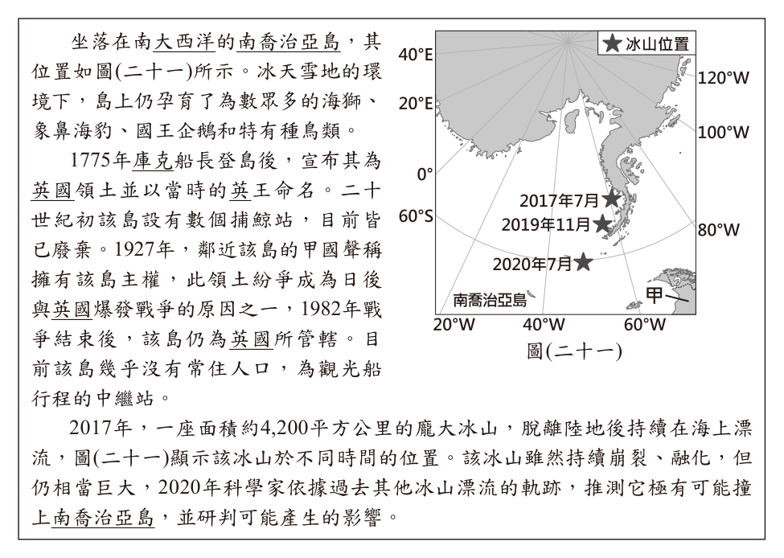
- （A）東北向西南
- （B）西南向東北
- （C）東南向西北
- （D）西北向東南
答案：（B）
詳解與考點
正解：題幹要依南極投影地圖判讀冰山的移動方向，不能直接把圖面上下、左右當成南北、東西。經線向南極中心輻輳，愈靠近中心愈偏南；圖中下緣經度由左至右為40°W、60°W，所以此區往右偏西、往左偏東。2017年7月的星號較高且偏右，位在西南端；2020年7月的星號較低且偏左，位在東北端，因此冰山由西南漂向東北，故B為正解。
A：東北向西南是實際移動方向的相反方向，錯誤。
C：東南向西北把圖面位置直接套成一般地圖的東西南北，沒有考慮南極投影下經線輻輳的方位變化，錯誤。
D：西北向東南同樣把上下、左右直接當成方位，未依經度與南極中心的位置判讀，錯誤。
本題考點：南極投影地圖判讀——先找南極中心判定南北，愈靠近中心愈偏南；經度判準——此區下緣由左至右為40°W、60°W，故右偏西、左偏東；移動方向——比較起點與終點後，2017年至2020年由西南向東北。
第 54 題
上述冰山若撞上南喬治亞島，其產生的影響最可能為下列何者？
- （A）巨浪侵襲島嶼陸地，阻礙工業發展
- （B）附近海水鹽度上升，改變海洋生態
- （C）威脅北美洲與非洲之間的船隻安全
- （D）島嶼海岸遭受破壞，危及動物棲地
答案：（D）
詳解與考點
正解：題幹指出南喬治亞島孕育海獅、象鼻海豹、國王企鵝與特有種鳥類；巨大冰山若撞擊或擱淺，最直接的影響是破壞島嶼海岸、阻斷動物覓食與繁殖，危及其棲地，故D為正解。
A：南喬治亞島幾乎沒有常住人口，題文也未顯示有工業可受阻礙，錯誤。
B：冰山融化會加入淡水，使附近海水鹽度下降而非上升，錯誤。
C：該島位於南大西洋，並非北美洲與非洲之間的主要航線位置，錯誤。
本題考點：冰山環境影響——大型冰山撞擊或擱淺可破壞海岸與近岸生態；海水鹽度判準——淡水融入海水會使鹽度下降；區位判讀——影響範圍須配合島嶼所在的南大西洋位置判斷。
其他年度
回到國中教育會考社會的年度總覽，
或到國中教育會考題庫首頁看其他科目。
題目與標準答案出自心測中心 會考歷屆試題（依著作權法 §9，考試試題不受著作權保護）。依中華民國《著作權法》第 9 條第 1 項第 5 款，
依法令舉行之各類考試試題不得為著作權之標的，得自由利用。詳解為 AI 整理的學習輔助，
並非官方標準答案；中華民國會修訂，引用前請對照現行版本查證。